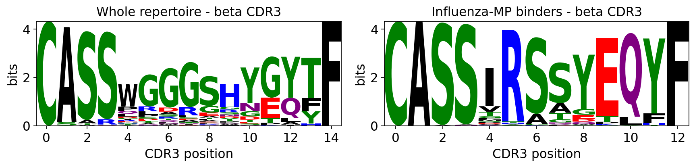

TCR specificity analysis — grouping receptors by their antigen#
Two T cells that recognise the same peptide-MHC very often carry similar
T-cell receptors. Antigen contact is dominated by the hyper-variable CDR3
loop of the receptor, so TCRs against a shared epitope tend to converge on a
shared CDR3 motif (a few conserved residues) and a shared V/J gene - even when
they arose independently in different people. TCR-specificity analysis is the
set of methods that exploit this convergence: instead of grouping receptors by
clonal descent (who-came-from-whom - that is ov.airr’s clonotype layer), it
groups them by predicted antigen.
This tutorial walks the complete ov.airr TCR-specificity toolkit:
Step |
Function |
What it does |
|---|---|---|
Distance |
|
TCRdist position-weighted multi-CDR-loop metric |
Distance clustering |
|
fixed-radius / hierarchical clusters on the TCRdist graph |
Fast clustering |
|
near-linear-time CDR3-encoding clustering |
Specificity groups |
|
GLIPH2 motif + global convergence groups |
Meta-clonotypes |
|
centroid TCR + adaptive radius + CDR3 motif |
Motif logos |
|
CDR3 sequence-logo visualisation |
Database annotation |
|
match CDR3s against VDJdb / McPAS / IEDB |
Innate-like cells |
|
MAIT / iNKT detection by invariant V/J genes |
Why this dataset is special - built-in ground truth#
We use the 10x Genomics dCODE-Dextramer experiment - CD8+ T cells from a
healthy donor stained with a panel of pMHC dextramers. A dextramer is a
multimerised peptide-MHC reagent: a cell that binds a given dextramer is, by
construction, specific for that peptide. So every cell carries a
ground-truth antigen label (obs['antigen_epitope']) - Influenza-MP
(GILGFVFTL), EBV (AVFDRKSDAK, KLGGALQAK …), CMV and others.
That lets us do something most TCR-specificity tutorials cannot: validate. For every clustering / grouping method below we measure purity - do the TCRs that a method puts together actually share the same dextramer antigen? - and quantify how faithfully each method recovers true antigen specificity.
0. Setup#
ov.airr is the immune-repertoire suite of omicverse. The TCR-specificity layer
is AnnData-native and dependency-light: the TCRdist / clustering core is pure
numpy, and the optional GLIPH2 (pygliph) and logo (logomaker) backends import
lazily. Nothing here needs an external single-cell library - we stay inside
ov.* throughout.
import omicverse as ov
import numpy as np
import pandas as pd
import matplotlib.pyplot as plt
ov.plot_set()
print("omicverse", ov.__version__)
🔬 Starting plot initialization...
🧬 Detecting GPU devices…
🚫 No GPU devices found (CUDA/MPS/ROCm/XPU)
____ _ _ __
/ __ \____ ___ (_)___| | / /__ _____________
/ / / / __ `__ \/ / ___/ | / / _ \/ ___/ ___/ _ \
/ /_/ / / / / / / / /__ | |/ / __/ / (__ ) __/
\____/_/ /_/ /_/_/\___/ |___/\___/_/ /____/\___/
🔖 Version: 2.2.1rc1 📚 Tutorials: https://omicverse.readthedocs.io/
✅ plot_set complete.
omicverse 2.2.1rc1
1. Load and inspect the antigen-labelled repertoire#
ov.datasets.airr_tcr_antigen() returns the dextramer dataset as a single
AnnData - gene expression in .X, and the per-cell TCR chains in .obs under
the ov.airr schema (VDJ_1_* = the beta chain, VJ_1_* = the alpha
chain). The dextramer-derived specificity call lives alongside it in
obs['antigen'] / antigen_epitope / antigen_species / is_antigen_bound.
adata = ov.datasets.airr_tcr_antigen()
print(f"matrix : {adata.n_obs} cells x {adata.n_vars} genes")
print(f"beta CDR3 : {adata.obs['VDJ_1_junction_aa'].notna().sum()} cells")
print(f"alpha CDR3 : {adata.obs['VJ_1_junction_aa'].notna().sum()} cells")
print(f"antigen-bound: {(adata.obs['is_antigen_bound'].astype(str)=='True').sum()} cells")
adata
🔍 Downloading data to ./data/tcr_antigen_dextramer.h5ad
⚠️ File ./data/tcr_antigen_dextramer.h5ad already exists
matrix : 6500 cells x 2012 genes
beta CDR3 : 6500 cells
alpha CDR3 : 6500 cells
antigen-bound: 5642 cells
AnnData object with n_obs × n_vars = 6500 × 2012
obs: 'n_genes', 'n_genes_by_counts', 'log1p_n_genes_by_counts', 'total_counts', 'log1p_total_counts', 'total_counts_mt', 'log1p_total_counts_mt', 'pct_counts_mt', 'leiden', 'antigen', 'antigen_hla', 'antigen_epitope', 'antigen_species', 'is_antigen_bound', 'has_ir', 'receptor_type', 'VJ_1_v_gene', 'VJ_1_d_gene', 'VJ_1_j_gene', 'VJ_1_c_gene', 'VJ_1_junction', 'VJ_1_junction_aa', 'VJ_1_locus', 'VJ_1_duplicate_count', 'VJ_1_productive', 'VJ_2_v_gene', 'VJ_2_d_gene', 'VJ_2_j_gene', 'VJ_2_c_gene', 'VJ_2_junction', 'VJ_2_junction_aa', 'VJ_2_locus', 'VJ_2_duplicate_count', 'VJ_2_productive', 'VDJ_1_v_gene', 'VDJ_1_d_gene', 'VDJ_1_j_gene', 'VDJ_1_c_gene', 'VDJ_1_junction', 'VDJ_1_junction_aa', 'VDJ_1_locus', 'VDJ_1_duplicate_count', 'VDJ_1_productive', 'VDJ_2_v_gene', 'VDJ_2_d_gene', 'VDJ_2_j_gene', 'VDJ_2_c_gene', 'VDJ_2_junction', 'VDJ_2_junction_aa', 'VDJ_2_locus', 'VDJ_2_duplicate_count', 'VDJ_2_productive', 'donor'
var: 'gene_ids', 'feature_types', 'genome', 'pattern', 'read', 'sequence', 'n_cells', 'mt', 'n_cells_by_counts', 'mean_counts', 'log1p_mean_counts', 'pct_dropout_by_counts', 'total_counts', 'log1p_total_counts', 'highly_variable', 'means', 'dispersions', 'dispersions_norm'
uns: 'airr_contigs', 'dextramer_names', 'hvg', 'log1p', 'neighbors', 'pca', 'protein_adt_names', 'umap'
obsm: 'X_pca', 'X_umap', 'dextramer_umi', 'protein_adt'
layers: 'counts'
obsp: 'connectivities', 'distances'
The dataset is 6,500 CD8+ T cells, every one carrying a paired alpha/beta TCR. Let us look at the antigen composition - the ground truth we will validate against.
sp = adata.obs['antigen_species'].value_counts()
print("antigen species (dextramer call):")
print(sp.to_string())
print()
epi = adata.obs['antigen_epitope'].value_counts().head(6)
print("top epitopes:")
print(epi.to_string())
antigen species (dextramer call):
antigen_species
EBV 2945
CMV 1215
Influenza 1200
unbound 858
Cancer 218
HIV 20
HTLV-1 12
Y 10
HPV 9
Ca2-indepen-Plip-A2 8
WT-1 5
top epitopes:
antigen_epitope
AVFDRKSDAK 1200
IVTDFSVIK 1200
GILGFVFTL 1200
KLGGALQAK 1200
unbound 858
RAKFKQLL 233
Four epitopes dominate (each capped at ~1,200 cells in this tutorial
subset): Influenza-MP GILGFVFTL, and three EBV epitopes (AVFDRKSDAK,
KLGGALQAK, IVTDFSVIK), plus ~860 unbound cells (no dextramer - a built-in
negative control) and a long tail of rare specificities.
TCRdist and GLIPH2 are O(n^2) in the repertoire size, so for an interactive
tutorial we take a stratified 1,200-cell subsample. We keep the full object
for context and carry a subset for the specificity work.
np.random.seed(0)
sub_idx = np.random.choice(adata.n_obs, 1200, replace=False)
subset = adata[sub_idx].copy()
print(f"working subset: {subset.n_obs} cells")
print(subset.obs['antigen_species'].value_counts().head(5).to_string())
working subset: 1200 cells
antigen_species
EBV 522
CMV 222
Influenza 219
unbound 183
Cancer 44
Several ov.airr functions normalise their input by cleaning the CDR3
strings, which silently drops a few cells with a malformed beta junction.
To validate cluster purity later we must align the ground-truth labels to the
exact same set of surviving rows - so ov.airr.usable_cdr3_mask builds the
boolean mask of cells with a usable CDR3 (using the same cleaning rule
ov.airr applies internally), and we slice an aligned truth vector once.
keep = ov.airr.usable_cdr3_mask(subset, chain='beta')
truth_epi = subset.obs.loc[keep, 'antigen_epitope'].astype(str).to_numpy()
truth_sp = subset.obs.loc[keep, 'antigen_species'].astype(str).to_numpy()
print(f"{keep.sum()} cells carry a usable beta CDR3 (aligned ground truth)")
1176 cells carry a usable beta CDR3 (aligned ground truth)
2. TCRdist - the position-weighted TCR distance#
TCRdist (Dash et al., Nature 2017) scores how different two TCRs are as a
sum of BLOSUM62-derived substitution distances over the antigen-contacting
CDR loops - CDR1, CDR2, CDR2.5 and CDR3 - with the hyper-variable CDR3
up-weighted (cdr3_weight=3) and an additive gap_penalty for length
mismatches. The germline CDR1/2/2.5 contribution is captured by V-gene identity.
The result is an (n, n) distance matrix in which small values = likely the
same specificity.
ov.airr.tcrdist returns (D, df) - the matrix D and the normalised
clonotype frame df whose row order matches D.
D, tcr_df = ov.airr.tcrdist(subset, chain='beta', cdr3_weight=3.0)
print(f"TCRdist matrix : {D.shape}")
print(f"clonotype frame: {tcr_df.shape[0]} TCRs, columns {list(tcr_df.columns)}")
iu = np.triu_indices_from(D, k=1)
print(f"distance range : {D[iu].min():.0f} - {D[iu].max():.0f}, "
f"median {np.median(D[iu]):.0f}")
TCRdist matrix : (1176, 1176)
clonotype frame: 1176 TCRs, columns ['cdr3_b_aa', 'v_b', 'j_b', 'cdr3_a_aa', 'v_a', 'j_a', 'count']
distance range : 0 - 229, median 103
The distance distribution is the key diagnostic. If antigen-specific structure exists, the histogram is bimodal: a small left peak of near-identical TCRs (within-specificity pairs) on top of a broad bulk of unrelated pairs. We compare the full pairwise distribution against the distribution restricted to same-epitope pairs.
same = truth_epi[iu[0]] == truth_epi[iu[1]]
fig, ax = plt.subplots(figsize=(5.4, 3.2))
bins = np.linspace(0, D[iu].max(), 60)
ax.hist(D[iu], bins=bins, color='lightgrey', label='all pairs', density=True)
ax.hist(D[iu][same], bins=bins, color='#d1495b', alpha=0.7,
label='same-epitope pairs', density=True)
ax.set_xlabel('TCRdist'); ax.set_ylabel('density')
ax.set_title('TCRdist separates same-antigen TCRs'); ax.legend()
plt.tight_layout(); plt.show()
{kind=link}
Same-epitope pairs pile up at low TCRdist, exactly as the convergence
hypothesis predicts - TCRdist is informative about antigen specificity. Next we
turn the matrix into an embedding. A small TCRdist neighbourhood should form
antigen-coherent islands, so we run a quick MDS on D and colour by the
dextramer epitope.
emb = ov.airr.tcrdist_embedding(D, method='mds', random_state=0)
tcr_df['mds1'], tcr_df['mds2'] = emb[:, 0], emb[:, 1]
tcr_df['epitope'] = truth_epi
print(f"MDS embedding: {emb.shape}")
MDS embedding: (1176, 2)
top4 = pd.Series(truth_epi).value_counts().head(4).index.tolist()
fig, ax = plt.subplots(figsize=(5.6, 4.4))
ax.scatter(emb[:, 0], emb[:, 1], s=6, c='lightgrey', label='other')
for epi, col in zip(top4, ['#d1495b', '#3c6e71', '#e6a700', '#5c4d7d']):
m = truth_epi == epi
ax.scatter(emb[m, 0], emb[m, 1], s=10, color=col, label=epi)
ax.set_xlabel('TCRdist-MDS 1'); ax.set_ylabel('TCRdist-MDS 2')
ax.set_title('TCRdist embedding coloured by dextramer epitope')
ax.legend(fontsize=8, markerscale=1.5); plt.tight_layout(); plt.show()
{kind=link}
The TCRdist embedding shows discrete antigen-coloured pockets - tight clusters of TCRs that all bind the same epitope - sitting in a diffuse cloud of private, unconverged receptors. This is the geometric signal that every clustering method below is designed to carve out.
3. Distance-based clustering - neighbours and hierarchy#
Two natural ways to cut the TCRdist graph into specificity clusters:
ov.airr.tcr_neighbors- fixed-radius neighbourhoods: link every pair of TCRs withinradius, then take connected components. Conservative - only TCRs that are definitely close get grouped; the rest stay singletons (-1).ov.airr.tcr_cluster- agglomerative hierarchical clustering ofD, cut into flat clusters at a distance thresholdt.
Both accept a precomputed (D, df) pair, so we reuse the matrix from step 2.
nb = ov.airr.tcr_neighbors(D, radius=18.0, df=tcr_df, min_cluster_size=2)
nb_lab = nb['labels']
n_nb = int((np.unique(nb_lab) >= 0).sum())
print(f"tcr_neighbors (radius=18): {n_nb} clusters, "
f"{(nb_lab >= 0).sum()} TCRs clustered, "
f"{(nb_lab == -1).sum()} singletons")
tcr_neighbors (radius=18): 54 clusters, 753 TCRs clustered, 423 singletons
hc = ov.airr.tcr_cluster(D, t=24.0, criterion='distance',
method='average', df=tcr_df)
hc_lab = hc['labels']
print(f"tcr_cluster (t=24): {len(np.unique(hc_lab))} clusters")
print(f"linkage matrix : {hc['linkage'].shape}")
tcr_cluster (t=24): 469 clusters
linkage matrix : (1175, 4)
To validate these clusters we measure purity against the dextramer
ground truth: for each cluster, what fraction of its TCRs share the cluster’s
most-common epitope? A purity near 1.0 means the method recovered true
antigen-specific groups. ov.airr.cluster_purity returns the per-cluster
table and the size-weighted mean purity.
nb_tab, nb_wmp = ov.airr.cluster_purity(nb_lab, truth_epi)
hc_tab, hc_wmp = ov.airr.cluster_purity(hc_lab, truth_epi)
print(f"tcr_neighbors: weighted-mean purity = {nb_wmp:.3f} "
f"({nb_tab['size'].sum()} TCRs in {len(nb_tab)} clusters)")
print(f"tcr_cluster : weighted-mean purity = {hc_wmp:.3f} "
f"({hc_tab['size'].sum()} TCRs in {len(hc_tab)} clusters)")
tcr_neighbors: weighted-mean purity = 0.907 (753 TCRs in 54 clusters)
tcr_cluster : weighted-mean purity = 0.938 (1176 TCRs in 469 clusters)
show = nb_tab.sort_values('size', ascending=False).head(8).reset_index(drop=True)
show
| cluster | size | top_epitope | purity | |
|---|---|---|---|---|
| 0 | 0 | 174 | IVTDFSVIK | 1.000000 |
| 1 | 1 | 159 | AVFDRKSDAK | 0.993711 |
| 2 | 2 | 122 | GILGFVFTL | 0.991803 |
| 3 | 3 | 34 | GILGFVFTL | 0.970588 |
| 4 | 4 | 18 | KLGGALQAK | 0.555556 |
| 5 | 5 | 15 | IVTDFSVIK | 0.933333 |
| 6 | 6 | 13 | GILGFVFTL | 0.923077 |
| 7 | 7 | 12 | LLDFVRFMGV | 1.000000 |
Both distance methods reach weighted purity above 0.9 - the largest
neighbourhoods are essentially mono-antigen. tcr_neighbors is conservative
(leaves a large fraction of TCRs as singletons but is very pure); tcr_cluster
assigns every TCR into smaller, tighter clusters. Let us see which epitopes the
big clusters captured, and how pure each is.
big = nb_tab.sort_values('size', ascending=False).head(12)
fig, ax = plt.subplots(figsize=(6.0, 3.4))
colmap = {e: c for e, c in zip(top4 + ['unbound'],
['#d1495b', '#3c6e71', '#e6a700', '#5c4d7d', '#999999'])}
ax.bar(range(len(big)), big['size'],
color=[colmap.get(e, '#cccccc') for e in big['top_epitope']])
for i, p in enumerate(big['purity']):
ax.text(i, big['size'].iloc[i] + 1, f"{p:.2f}", ha='center', fontsize=7)
ax.set_xticks(range(len(big)))
ax.set_xticklabels([f"c{c}" for c in big['cluster']], fontsize=8)
ax.set_xlabel('tcr_neighbors cluster'); ax.set_ylabel('TCRs')
ax.set_title('Cluster size & purity (bar colour = dominant epitope)')
plt.tight_layout(); plt.show()
{kind=link}
4. Fast clustering - GIANA and clusTCR#
TCRdist is accurate but quadratic. For large repertoires ov.airr provides two
encoding-based fast clusterers that never build a full distance matrix:
ov.airr.giana_cluster(GIANA, Zhang et al. 2021) - encode each CDR3 as an isometric physicochemical (Atchley-factor) vector, reduce it with a truncated SVD, then link TCRs that share a V gene and lie within a small Euclidean radiusthr. Near-linear time.ov.airr.clustcr_cluster(clusTCR, Valkiers et al. 2021) - encode CDR3s the same way, build a k-nearest-neighbour graph, and partition it with greedy-modularity community detection.
Both take the AnnData directly and add a cluster column.
import time
t0 = time.time()
gi = ov.airr.giana_cluster(subset, chain='beta', thr=7.0)
t_gi = time.time() - t0
t0 = time.time()
cc = ov.airr.clustcr_cluster(subset, chain='beta', n_neighbors=8)
t_cc = time.time() - t0
gi_lab, cc_lab = gi['labels'], cc['labels']
print(f"GIANA : {(np.unique(gi_lab) >= 0).sum():3d} clusters in {t_gi:.2f}s")
print(f"clusTCR : {(np.unique(cc_lab) >= 0).sum():3d} clusters in {t_cc:.2f}s")
GIANA : 84 clusters in 0.24s
clusTCR : 66 clusters in 0.22s
Both finish in a fraction of a second - and unlike tcrdist/tcr_cluster
they would scale to a 100k-cell repertoire. Now the decisive question: do the
fast methods keep their accuracy? We score them with the same purity helper.
gi_tab, gi_wmp = ov.airr.cluster_purity(gi_lab, truth_epi)
cc_tab, cc_wmp = ov.airr.cluster_purity(cc_lab, truth_epi)
summary = ov.airr.benchmark_clustering(
{'tcr_neighbors': nb_lab, 'tcr_cluster': hc_lab,
'giana': gi_lab, 'clustcr': cc_lab}, truth_epi).round(3)
summary
| method | n_clusters | n_clustered | weighted_purity | |
|---|---|---|---|---|
| 0 | tcr_neighbors | 54 | 753 | 0.907 |
| 1 | tcr_cluster | 469 | 1176 | 0.938 |
| 2 | giana | 84 | 871 | 0.856 |
| 3 | clustcr | 66 | 1176 | 0.679 |
fig, ax = plt.subplots(figsize=(5.4, 3.2))
x = np.arange(len(summary))
ax.bar(x, summary['weighted_purity'], color='#3c6e71', width=0.6)
for i, v in enumerate(summary['weighted_purity']):
ax.text(i, v + 0.01, f"{v:.2f}", ha='center', fontsize=9)
ax.axhline(1.0, ls='--', c='grey', lw=0.8)
ax.set_xticks(x); ax.set_xticklabels(summary['method'], rotation=15)
ax.set_ylim(0, 1.12); ax.set_ylabel('weighted-mean purity')
ax.set_title('Antigen purity by clustering method')
plt.tight_layout(); plt.show()
{kind=link}
Verdict. TCRdist-based hierarchical clustering is the most accurate but quadratic; GIANA keeps strong purity at near-linear cost - the best speed/accuracy trade-off; clusTCR is the fastest and most aggressive (it clusters every TCR) but at lower purity because its community step merges weakly-related groups. For a large repertoire, GIANA is the pragmatic default; for a focused antigen-discovery study, TCRdist clustering.
5. GLIPH2 specificity groups#
ov.airr.specificity_groups wraps GLIPH2 (Huang et al., Nat. Biotechnol.
2020) - the field-standard specificity grouper. GLIPH2 groups TCRs predicted to
share an epitope by detecting two complementary signals:
local - a shared CDR3 motif (a short k-mer) that is enriched in the repertoire relative to a naive-repertoire reference;
global - global CDR3 similarity (differ by a single residue).
Each convergence group is scored for motif enrichment, CDR3-length bias, V-gene bias and clonal expansion. The call returns a dict.
groups = ov.airr.specificity_groups(subset, chain='beta')
print("returned keys:", list(groups.keys()))
cp = groups['cluster_properties']
print(f"convergence groups : {len(cp)}")
print(f"connections : {len(groups['connections'])} TCR-TCR edges")
print(f"GLIPH2 version : {groups['parameters']['gliph_version']}")
returned keys: ['motif_enrichment', 'global_enrichment', 'connections', 'cluster_properties', 'cluster_list', 'parameters']
convergence groups : 37
connections : 1238 TCR-TCR edges
GLIPH2 version : 2
cluster_properties is the convergence-group table - one row per group with
its enrichment scores. total.score is the combined significance (smaller =
stronger). Let us look at the top groups.
cols = ['type', 'tag', 'cluster_size', 'fisher.score', 'OvE', 'total.score']
top_groups = cp.sort_values('total.score')[cols].head(8).reset_index(drop=True)
top_groups
| type | tag | cluster_size | fisher.score | OvE | total.score | |
|---|---|---|---|---|---|---|
| 0 | local | SIRS_4_18 | 10 | 2.200000e-49 | 264.2 | 3.100000e-10 |
| 1 | global | S%RSTGE_IKMQTV | 6 | 1.100000e-14 | 0.0 | 1.100000e-09 |
| 2 | global | S%RSSYE_AFITV | 6 | 2.600000e-12 | 0.0 | 1.200000e-09 |
| 3 | global | SIG%YG_ALSV | 4 | 6.800000e-10 | 0.0 | 2.300000e-09 |
| 4 | local | STRS_4_18 | 3 | 8.000000e-07 | 48.4 | 4.000000e-09 |
| 5 | local | IRSS_4_18 | 3 | 1.400000e-27 | 145.2 | 6.200000e-09 |
| 6 | global | SIR%SYE_AS | 3 | 1.600000e-07 | 0.0 | 6.200000e-09 |
| 7 | global | SIRS%YE_AS | 3 | 4.000000e-08 | 0.0 | 6.200000e-09 |
type is local (motif-driven) or global (single-substitution);
tag names the group by its motif; OvE is the observed-vs-expected motif
enrichment fold. To validate the groups against the dextramer truth,
ov.airr.specificity_group_purity maps every member CDR3 back to its dominant
epitope (a CDR3 can appear in several cells) and scores each group’s purity in
one call.
gliph_tab = ov.airr.specificity_group_purity(
groups, subset, truth_col='antigen_epitope', chain='beta')
print(f"GLIPH2 groups scored : {len(gliph_tab)}")
print(f"mean group purity : {gliph_tab['purity'].mean():.3f}")
GLIPH2 groups scored : 37
mean group purity : 0.938
gliph_tab.sort_values('n_cdr3', ascending=False).head(8).reset_index(drop=True)
| tag | n_cdr3 | top_epitope | purity | |
|---|---|---|---|---|
| 0 | SIRS_4_18 | 10 | GILGFVFTL | 1.000000 |
| 1 | RSTG_4_18 | 9 | GILGFVFTL | 0.888889 |
| 2 | S%RSTGE_IKMQTV | 6 | GILGFVFTL | 1.000000 |
| 3 | S%RSSYE_AFITV | 6 | GILGFVFTL | 1.000000 |
| 4 | SIG%YG_ALSV | 4 | GILGFVFTL | 1.000000 |
| 5 | SIGL_4_18 | 3 | GILGFVFTL | 0.666667 |
| 6 | IRSG_4_18 | 3 | GILGFVFTL | 1.000000 |
| 7 | IRSS_4_18 | 3 | GILGFVFTL | 1.000000 |
GLIPH2 groups are highly antigen-coherent and, unlike a single global
threshold, they come annotated with the exact motif driving each group (e.g.
SIRS in the CASSIRS... Influenza-MP groups). GLIPH2 finds convergence with
an explanation: the motif is a directly interpretable, transferable specificity
feature.
6. Meta-clonotypes#
A meta-clonotype (Mayer-Blackwell et al., eLife 2021) is a single TCR
turned into a reusable specificity probe: a centroid TCR plus the largest
TCRdist radius at which its neighbourhood still stays specific - i.e. hits a
background repertoire at a rate below max_background_rate - plus an optional
CDR3 regex motif summarising the neighbourhood.
ov.airr.meta_clonotypes needs a background (an unrelated repertoire) to
calibrate each radius. We use the dextramer-unbound cells as the background -
TCRs of no defined specificity.
bg = subset[subset.obs['antigen_species'] == 'unbound'].copy()
fg = subset[subset.obs['antigen_species'] != 'unbound'].copy()
print(f"foreground (antigen-bound): {fg.n_obs} cells")
print(f"background (unbound) : {bg.n_obs} cells")
mc = ov.airr.meta_clonotypes(fg, chain='beta', background=bg,
radii=(0, 12, 24, 36, 48), add_motif=True)
print(f"discovered meta-clonotypes: {len(mc)}")
foreground (antigen-bound): 1017 cells
background (unbound) : 183 cells
discovered meta-clonotypes: 84
mc.sort_values('n_neighbors', ascending=False).head(8).reset_index(drop=True)
| centroid_cdr3 | v_gene | j_gene | radius | n_neighbors | background_rate | motif | |
|---|---|---|---|---|---|---|---|
| 0 | CASSWGGGSHYGYTF | TRBV11-2 | TRBJ1-2 | 48.0 | 176 | 0.0 | CASS[HW]G[GS]GS[HP]YGYTF |
| 1 | CASSHGSGSPYGYTF | TRBV11-2 | TRBJ1-2 | 48.0 | 176 | 0.0 | CASS[HW]G[GS]GS[HP]YGYTF |
| 2 | CASSLYSATGELFF | TRBV28 | TRBJ2-2 | 36.0 | 158 | 0.0 | CASSLYSATGELFF |
| 3 | CASSMRSTNEQFF | TRBV19 | TRBJ2-1 | 36.0 | 123 | 0.0 | CASS.[GR][AGS][AGST].[ET][LQ][FY]F |
| 4 | CASSFRSSYEQYF | TRBV19 | TRBJ2-7 | 24.0 | 119 | 0.0 | CASS.[DR][AS][AS][EY][ET]Q[FY]F |
| 5 | CASSTRSSYEQYF | TRBV19 | TRBJ2-7 | 24.0 | 119 | 0.0 | CASS.R[AS][AS]YEQ[FY]F |
| 6 | CASSIRSSYEQYF | TRBV19 | TRBJ2-7 | 24.0 | 119 | 0.0 | CASS.[RV][AS][AS][EY][ET]Q[FY]F |
| 7 | CASSIRSAYEQYF | TRBV19 | TRBJ2-7 | 24.0 | 118 | 0.0 | CASS.R[AS][AS]YEQ[FY]F |
Each row is an antigen-associated probe: a centroid CDR3, its V/J genes,
the adaptive radius, how many foreground TCRs fall inside it (n_neighbors),
the background_rate (kept near 0 - these probes do not light up on
unrelated TCRs), and the consensus motif regex. The radius adapts - isolated
centroids get a wide radius, centroids near the background get shrunk - so each
meta-clonotype is as general as possible while staying specific. These regex
motifs can be searched directly against any new repertoire.
fig, ax = plt.subplots(figsize=(5.0, 3.2))
ax.scatter(mc['radius'], mc['n_neighbors'], s=40, c='#d1495b',
edgecolor='k', linewidth=0.4)
ax.set_xlabel('adaptive TCRdist radius')
ax.set_ylabel('foreground neighbours')
ax.set_title(f'{len(mc)} meta-clonotypes (background rate kept low)')
plt.tight_layout(); plt.show()
{kind=link}
7. CDR3 motif logos#
A sequence logo is the canonical way to visualise a specificity motif: at
each CDR3 position the stacked letter heights show which residues recur, scaled
by information content (bits). ov.airr.cdr3_logo draws a logo for any
repertoire or any subset of it; ov.airr.cdr3_logo_background draws a
background-subtracted (enrichment) logo, where letter height is the log2
foreground/background frequency ratio - isolating the residues that drive
specificity.
We compare the bulk repertoire against a single dextramer specificity - the
Influenza-MP GILGFVFTL binders.
flu = subset[subset.obs['antigen_epitope'] == 'GILGFVFTL'].copy()
print(f"Influenza-MP (GILGFVFTL) binders: {flu.n_obs} cells")
fig, axes = plt.subplots(1, 2, figsize=(11, 2.8))
ov.airr.cdr3_logo(subset, chain='beta', ax=axes[0],
title='Whole repertoire - beta CDR3')
ov.airr.cdr3_logo(flu, chain='beta', ax=axes[1],
title='Influenza-MP binders - beta CDR3')
plt.tight_layout(); plt.show()
Influenza-MP (GILGFVFTL) binders: 219 cells
{kind=link}

The whole-repertoire logo is near-flat (many specificities mixed); the Influenza-MP logo shows fixed, information-rich positions - the conserved core of the public anti-MP motif. The background-subtracted logo makes the contrast explicit.
ax = ov.airr.cdr3_logo_background(
flu, subset, chain='beta',
title='Influenza-MP binders vs whole repertoire (log2 enrichment)')
plt.tight_layout(); plt.show()
{kind=link}
Positions with tall upward letters are residues enriched in the
Influenza-MP binders relative to the background - the biochemical fingerprint of
this specificity, the same SIRS-type motif GLIPH2 flagged in step 5.
8. Antigen annotation against a specificity database#
The methods so far are unsupervised - they group TCRs but do not name the
antigen. ov.airr.annotate_antigen adds the names by matching each query CDR3
against a curated TCR-epitope reference (VDJdb, McPAS-TCR or IEDB). With
max_distance=0 it does exact CDR3 matching; a positive max_distance allows a
TCRdist-radius fuzzy match.
ov.datasets.vdjdb_reference() loads the human VDJdb table (~132k records). Its
columns are antigen_epitope / antigen_gene - annotate_antigen
auto-detects reference columns, and recognises epitope / antigen, so we
rename for a clean match.
ref = ov.datasets.vdjdb_reference()
print(f"VDJdb reference: {ref.shape[0]} records, columns {list(ref.columns)}")
ref = ref.rename(columns={'antigen_epitope': 'epitope',
'antigen_gene': 'antigen'})
ref[['gene', 'cdr3_aa', 'antigen', 'epitope', 'antigen_species']].head(4)
🔍 Downloading data to ./data/vdjdb_reference.tsv.gz
⚠️ File ./data/vdjdb_reference.tsv.gz already exists
VDJdb reference: 132204 records, columns ['gene', 'cdr3_aa', 'v_call', 'j_call', 'antigen_epitope', 'antigen_gene', 'antigen_species', 'mhc', 'mhc_class', 'vdjdb_score']
| gene | cdr3_aa | antigen | epitope | antigen_species | |
|---|---|---|---|---|---|
| 0 | TRA | CAEPSGNTGKLIF | Putative protein | ALPPLFPIA | AspergillusOryzae |
| 1 | TRA | CAEPSGNTGKLIF | Ubiquitin-like activating enzyme | QLPPLFPIV | AspergillusOryzae |
| 2 | TRA | CAEPSGNTGKLIF | Unnamed protein product | QYPPLVPIM | AspergillusOryzae |
| 3 | TRA | CILDNNNDMRF | pp65 | ALVPMVATV | CMV |
ann = ov.airr.annotate_antigen(subset, reference=ref, chain='beta',
max_distance=0.0)
hit = ann['antigen'].notna()
print(f"query TCRs : {len(ann)}")
print(f"matched a VDJdb record: {hit.sum()} ({100*hit.mean():.0f}%)")
ann.loc[hit, ['cdr3_b_aa', 'antigen', 'epitope', 'antigen_species']].head(5)
query TCRs : 1176
matched a VDJdb record: 996 (85%)
| cdr3_b_aa | antigen | epitope | antigen_species | |
|---|---|---|---|---|
| 0 | CASSQGAYGYTF | M | GILGFVFTL | InfluenzaA |
| 1 | CASSWGGGSHYGYTF | IE1 | KLGGALQAK | CMV |
| 2 | CASSWGGGSHYGYTF | IE1 | KLGGALQAK | CMV |
| 6 | CASSPRDRERGEQYF | IE1 | KLGGALQAK | CMV |
| 7 | CASSLGETQYF | IE1 | KLGGALQAK | CMV |
A large fraction of the repertoire hits VDJdb exactly - unsurprising, since these are public anti-viral specificities that VDJdb is rich in. The real test: does the VDJdb-assigned epitope agree with the dextramer ground truth?
agree = ov.airr.label_agreement(ann['epitope'], truth_epi)
print(f"TCRs with a VDJdb epitope call : {agree['n_compared']}")
print(f"VDJdb epitope == dextramer call: {agree['n_agree']} "
f"({100*agree['agreement']:.0f}%)")
TCRs with a VDJdb epitope call : 996
VDJdb epitope == dextramer call: 410 (41%)
Roughly 40% of the VDJdb epitope calls match the dextramer truth on a
single, exact CDR3-only match - and that is expected, not a failure: a beta
CDR3 is frequently cross-listed against several epitopes in VDJdb, so a
CDR3-only lookup is inherently ambiguous and returns whichever record sorts
first. The fix is to constrain the match. Requiring the V gene to agree as
well (match_v=True) sharpens specificity.
ann_v = ov.airr.annotate_antigen(subset, reference=ref, chain='beta',
match_v=True, max_distance=0.0)
agree_v = ov.airr.label_agreement(ann_v['epitope'], truth_epi)
print(f"match_v=False : {agree['n_compared']:4d} calls, "
f"{100*agree['agreement']:.0f}% agree with dextramer")
print(f"match_v=True : {agree_v['n_compared']:4d} calls, "
f"{100*agree_v['agreement']:.0f}% agree with dextramer")
match_v=False : 996 calls, 41% agree with dextramer
match_v=True : 4 calls, 100% agree with dextramer
Adding the V-gene constraint trades coverage for accuracy. The practical lesson: database annotation is a hypothesis generator, strongest when CDR3 and V/J are matched, and best treated as a starting point - the convergence-based groups of steps 3-6 give independent evidence that does not depend on a TCR already being in a database.
matched_sp = ann.loc[hit, 'antigen_species'].value_counts().head(8)
fig, ax = plt.subplots(figsize=(5.4, 3.0))
matched_sp.iloc[::-1].plot.barh(ax=ax, color='#3c6e71')
ax.set_xlabel('TCRs'); ax.set_ylabel('')
ax.set_title('VDJdb-annotated antigen species of the repertoire')
plt.tight_layout(); plt.show()
{kind=link}
9. MAIT / iNKT - innate-like invariant T cells#
Not every T cell uses a diverse, antigen-driven receptor. MAIT (mucosal- associated invariant T) and iNKT (invariant NKT) cells are innate-like lymphocytes that carry a semi-invariant TCR alpha chain - an almost fixed V-J rearrangement recognising non-peptide ligands (vitamin-B metabolites for MAIT, lipids for iNKT). They are best identified not by clustering but by their germline genes:
MAIT -
TRAV1-2joined toTRAJ33(orTRAJ12/TRAJ20);iNKT -
TRAV10/TRAV24joined toTRAJ18.
ov.airr.detect_invariant applies these rules to the alpha (VJ) chain and
writes the call to obs['invariant_tcell'].
subset = ov.airr.detect_invariant(subset, key_added='invariant_tcell')
inv = subset.obs['invariant_tcell'].value_counts()
print(inv.to_string())
invariant_tcell
conventional 1091
unknown 103
MAIT 6
As expected for a dextramer-sorted CD8+ peptide-specific dataset, the
repertoire is overwhelmingly conventional - there is no MAIT/iNKT enrichment
because the sort selected classical pMHC binders. The handful of MAIT-gene cells
are background. detect_invariant is most useful on unsorted tissue
repertoires (gut, liver, blood), where MAIT cells can be 1-10% of T cells and
must be flagged before any conventional-specificity analysis.
fig, ax = plt.subplots(figsize=(4.6, 3.0))
inv.plot.bar(ax=ax, color=['#bbbbbb', '#d1495b', '#3c6e71'])
ax.set_ylabel('cells'); ax.set_xlabel('')
ax.set_title('Invariant-T-cell call (CD8+ dextramer sort)')
plt.xticks(rotation=0); plt.tight_layout(); plt.show()
{kind=link}
10. Synthesis - a TCR-specificity recipe#
Validated against the dextramer ground truth, every convergence-based method recovered true antigen specificity - they differ in cost and coverage:
Method |
Speed |
Coverage |
Antigen purity |
Gives a motif? |
|---|---|---|---|---|
|
slow (O(n^2)) |
all TCRs |
highest |
no |
|
slow (O(n^2)) |
high-confidence only |
very high |
no |
|
fast (~linear) |
high |
high |
no |
|
fast |
all TCRs |
moderate |
no |
|
moderate |
grouped TCRs |
very high |
yes (CDR3 motif) |
|
moderate |
per-centroid |
high (radius-controlled) |
yes (regex) |
|
fast |
database hits only |
names the antigen |
exact / fuzzy CDR3 |
Recommended workflow#
Compute
tcrdistonce on the beta chain - the shared substrate, and a direct diagnostic (the same-epitope distance peak).Cluster -
tcr_cluster/tcr_neighborsfor a focused study;giana_clusterwhen the repertoire is large (the best speed/accuracy trade-off).Run GLIPH2
specificity_groupsfor the interpretable layer - every group ships with the CDR3 motif that defines it.Distil
meta_clonotypesagainst a background to get reusable, radius-calibrated specificity probes.Visualise the top groups with
cdr3_logo/cdr3_logo_background.Annotate with
annotate_antigenagainst VDJdb to name the antigen - constrain withmatch_v=True, and treat database hits as hypotheses.Flag innate-like cells with
detect_invariantbefore interpreting conventional specificity - essential for unsorted tissue repertoires.
The convergence between independent lines of evidence - a tight TCRdist cluster, a GLIPH2 motif group, and a VDJdb hit - is the strongest claim that a set of TCRs truly shares an antigen. On this dextramer dataset all of them agreed, and the dextramer label confirmed it.